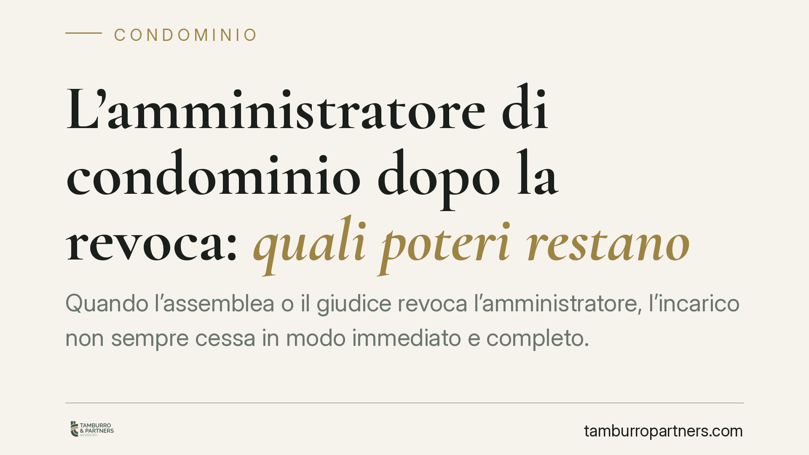

L'amministratore di condominio dopo la revoca: quali poteri restano
Quando l'assemblea o il giudice revoca l'amministratore, l'incarico non sempre cessa in modo immediato e completo. Fino alla nomina del successore possono residuare poteri limitati, ma la loro ampiezza dipende dal tipo di revoca. Capire cosa è ancora legittimo evita atti nulli, spese contestabili e vuoti di gestione dannosi per il condominio.

Il quadro normativo
La disciplina di riferimento è l'art. 1129 del codice civile, che regola nomina, durata, revoca e obblighi dell'amministratore di condominio. L'incarico dura un anno e si intende rinnovato per uguale durata, salvo diversa deliberazione o revoca. La revoca può avvenire in due forme: assembleare, con delibera adottata in qualsiasi momento dall'assemblea; giudiziale, disposta dal tribunale nei casi indicati dalla norma (ad esempio gravi irregolarità o omessa comunicazione di iniziative giudiziarie).
La distinzione non è formale. Incide direttamente sull'ampiezza dei poteri che l'amministratore uscente conserva nel periodo transitorio.
La prorogatio: cosa significa e i suoi limiti
Con *prorogatio imperii* si indica la permanenza in carica dell'amministratore, con poteri ridotti, fino alla nomina di chi lo sostituisce. La ragione è pratica: evitare che il condominio resti privo di gestione, esposto a scadenze, pagamenti e adempimenti non rinviabili.
Dopo la riforma del 2012 (legge 220/2012), la portata della prorogatio in caso di revoca giudiziale è oggetto di orientamenti restrittivi. Quando la revoca è disposta dal giudice per gravi irregolarità, la logica stessa del provvedimento – allontanare un gestore ritenuto inaffidabile – mal si concilia con il riconoscimento di ampi poteri residui. In questi casi la prorogatio tende a comprimersi ai soli atti conservativi e urgenti.
Nel caso di revoca assembleare, invece, il margine è generalmente più ampio, ma pur sempre circoscritto alla gestione ordinaria e agli atti indifferibili, non a nuove iniziative di spesa.
Cosa può e cosa non può fare
In regime di prorogatio, la linea di confine passa tra atti urgenti e indifferibili e nuove iniziative.
Rientrano nell'area consentita: il pagamento di utenze in scadenza, gli interventi necessari a evitare danni a persone o cose, la riscossione di somme dovute, gli adempimenti fiscali improrogabili. Sono invece precluse le decisioni che impegnano il condominio in nuove spese non necessarie, l'avvio di contenziosi non urgenti, la stipula di contratti di durata.
L'amministratore uscente non può comportarsi come se l'incarico proseguisse a pieno regime. Ogni atto eccedente la stretta necessità rischia di essere contestato dai condòmini e di non gravare validamente sulla gestione.
Il passaggio di consegne
L'art. 1129, comma 8, del codice civile impone all'amministratore, alla cessazione dell'incarico, la consegna di tutta la documentazione in suo possesso relativa al condominio e ai singoli condòmini. È un obbligo autonomo, che non viene meno per effetto della revoca.
La mancata o ritardata consegna espone a responsabilità e legittima il condominio ad agire per ottenere la documentazione, oltre a rappresentare essa stessa una possibile irregolarità.
Il compenso per l'attività transitoria
Sul piano economico, l'attività dell'amministratore non si presume gratuita. Il rapporto è comunemente ricondotto allo schema del mandato: per analogia con gli artt. 1709 e 1720 del codice civile, chi svolge attività di gestione ha diritto a un compenso e al rimborso delle spese sostenute nell'interesse del condominio.
Ne deriva, come principio generale, che l'attività legittimamente prestata nel periodo di prorogatio – limitata agli atti consentiti – può fondare una pretesa di compenso proporzionata. La misura e la spettanza vanno però valutate caso per caso, tenendo conto del tipo di revoca e dell'effettivo perimetro degli atti compiuti.
Cosa fare in concreto
- Distinguere subito il tipo di revoca (assembleare o giudiziale): da questo dipende l'ampiezza dei poteri residui.
- Limitare l'attività, in prorogatio, ai soli atti urgenti e indifferibili, documentandone la necessità.
- Provvedere tempestivamente al passaggio di consegne, con inventario scritto della documentazione trasferita.
- Convocare o sollecitare l'assemblea per la nomina del successore, riducendo al minimo il periodo transitorio.
- Formalizzare per iscritto ogni atto compiuto e ogni spesa, così da poter documentare eventuali pretese di compenso.
Per le situazioni di conflitto tra amministratore uscente e condominio, consigliamo una verifica preventiva della legittimità degli atti compiuti, prima che diventino oggetto di contestazione.
---
Contributo informativo a cura di Tamburro & Partners - Avv. Giuseppe Tamburro. Non costituisce parere legale.
Ogni condominio ha una storia a sé.
Se gestisci un'amministrazione e vuoi un confronto su una specifica questione condominiale, scrivi allo studio. Ti rispondiamo entro un giorno lavorativo.